A comporta é o “pulmão”
O governo abre e fecha a comporta do vertedouro para a água do mar entrar e sair. Isso renova e oxigena a lagoa. Segundo a Sinfra, as grandes trocas de água acontecem em ciclos de cerca de 28 dias, acompanhando as marés.
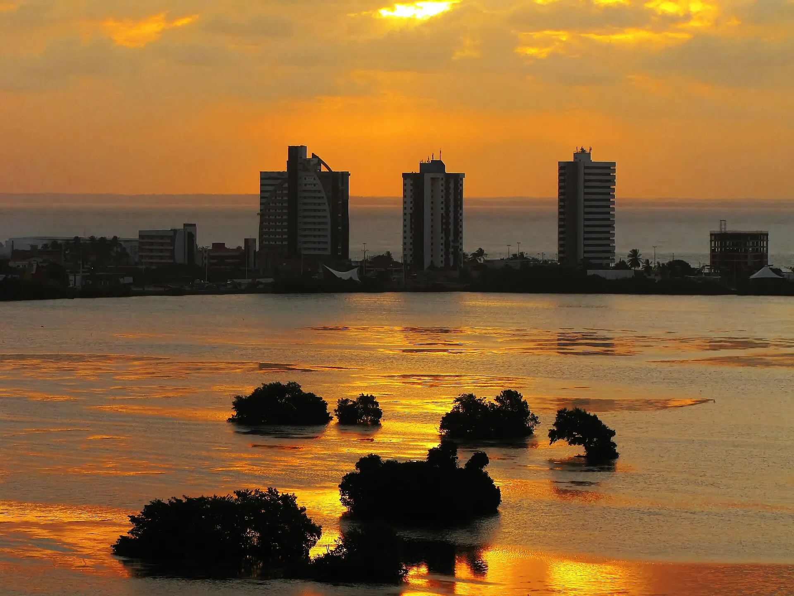
Projeto escolar Feira de Ciências Maktub
São Luís · Maranhão
Uma lagoa que nasceu de um aterro, virou cartão-postal e hoje é um laboratório a céu aberto, onde dá pra ver de perto a briga entre a cidade e o mangue.
Foto: Lyssuel Calvet · CC BY 2.0
A lagoa
A Lagoa da Jansen fica no noroeste de São Luís, entre os bairros Ponta d’Areia, São Francisco, Renascença e Ponta do Farol, a cerca de 4 km do Centro Histórico.
Ela não é natural. Até os anos 1970, ali havia um manguezal cortado por igarapés e banhado pelas marés. Quando a Avenida Ana Jansen foi construída sobre um aterro, a água ficou represada e formou o espelho d’água que conhecemos hoje.
Em 1988 a área virou parque ecológico, para proteger o mangue que sobrou. Hoje ela reúne natureza, esporte, bares e um dos pores do sol mais bonitos da capital.
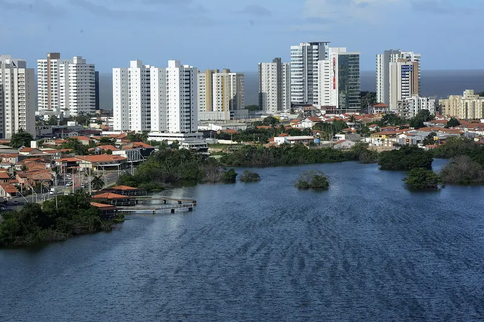
História
Cinquenta anos de aterros, leis, obras e cuidados, em ordem.
Um manguezal de 169 hectares, cortado pelos igarapés da Jansen e do Jaracati, enchia e esvaziava com as marés.
A Avenida Maestro João Nunes (hoje Av. Ana Jansen) é construída sobre um aterro que bloqueia o Igarapé da Jansen. A água presa forma a laguna.
Uma empresa da prefeitura chegou a lotear e vender ilegalmente cerca de metade do espelho d’água para construir.
A Lei estadual 4.878, de 23 de junho, cria o Parque Ecológico da Lagoa da Jansen, para proteger o que restou do mangue.
Grande urbanização: ciclovia, quadras, concha acústica e mirante. Em dezembro, a escultura da Serpente é colocada na água.
Um decreto passa a gestão da área para a Secretaria de Estado do Meio Ambiente (Sema).
A Caema retira cerca de 70 pontos de esgoto. Com novas redes e estações de bombeamento, 100 litros de esgoto por segundo deixam de cair na lagoa.
Deteriorada, a escultura da Serpente fica quase toda submersa, com pedaços espalhados pela lagoa.
Uma comporta cede e o nível da água baixa. O governo identifica um desalinhamento no canal que liga a lagoa ao mar.
Mais de R$ 20 milhões em obras: Arena Domingos Leal, pista de skate e BMX, quadras, quiosques e a Praça Poeta José Chagas.
Em abril, a Serpente restaurada volta à lagoa. Em 7 de junho é inaugurada a Praça Aymar Mesquita, a primeira do Maranhão pensada para crianças com deficiência.
O mau cheiro volta a incomodar. A Caema aponta ligações clandestinas de esgoto na rede de chuva, e moradores criam o grupo Amigos da Lagoa da Jansen.
Ciência
A Lagoa da Jansen é, na verdade, uma laguna: um corpo de água rasa ligado ao mar. A água dela é salobra, uma mistura de água doce (chuva e igarapés) com água salgada. Por isso a lagoa depende do mar para se renovar.
Com a comporta fechada, a lagoa segura o seu nível de água, mas a água fica parada. Sem renovação, o oxigênio cai e a sujeira se acumula.
Esquema simplificado e fora de escala. A ligação real é feita por um canal e tubos que passam por baixo da avenida.
O governo abre e fecha a comporta do vertedouro para a água do mar entrar e sair. Isso renova e oxigena a lagoa. Segundo a Sinfra, as grandes trocas de água acontecem em ciclos de cerca de 28 dias, acompanhando as marés.
Nas raízes do mangue nascem e se escondem peixes, siris e caranguejos. Ele também segura a lama, filtra a água e protege a margem da erosão. Na lagoa há mangue-branco e siriba (mangue-preto).
Lagoa é água parada separada do mar. Laguna é água rasa que se comunica com o mar. Pelo critério científico, a Jansen é uma laguna. O nome “lagoa” ficou pelo costume.
O nome do fenômeno é eutrofização. Ele acontece em etapas:
Como quebrar o ciclo: tirar o esgoto da lagoa, renovar a água pela comporta e preservar o mangue. É exatamente nisso que os trabalhos dos últimos anos se concentram.
Recuperação
Desde 2015, governo e companhia de saneamento vêm atacando a raiz do problema. Os números mostram o tamanho do esforço:
Em novembro de 2026 o mau cheiro voltou. A rede de esgoto da região já está pronta, mas ainda há imóveis que não se ligaram a ela e ligações clandestinas que jogam esgoto na rede de água da chuva. O canal com o mar também precisou de ajustes. A recuperação avançou, mas depende de todo mundo.
Natureza
Mesmo no meio de prédios, a lagoa abriga aves, répteis, peixes e crustáceos. Muitas famílias do entorno ainda vivem da pesca artesanal.
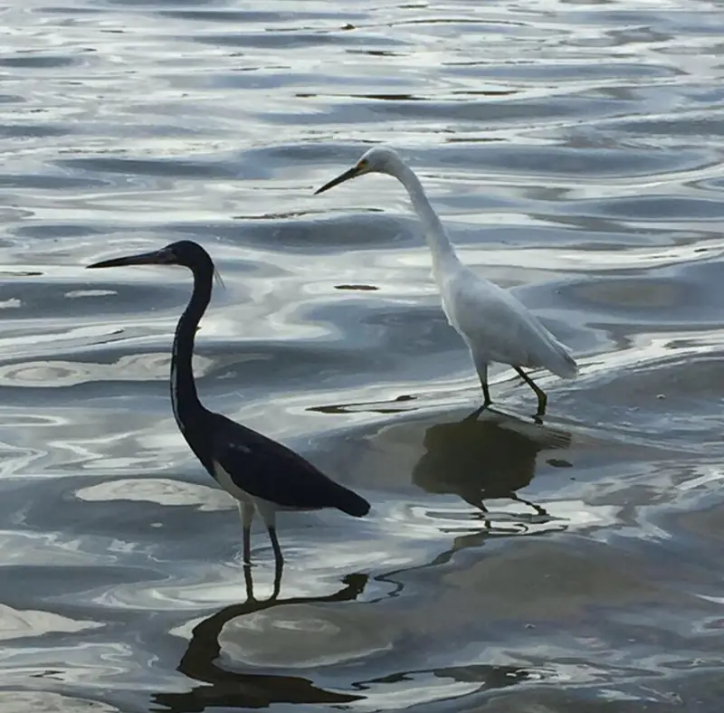
As mais fáceis de ver. Ficam paradas na água rasa esperando um peixe passar.
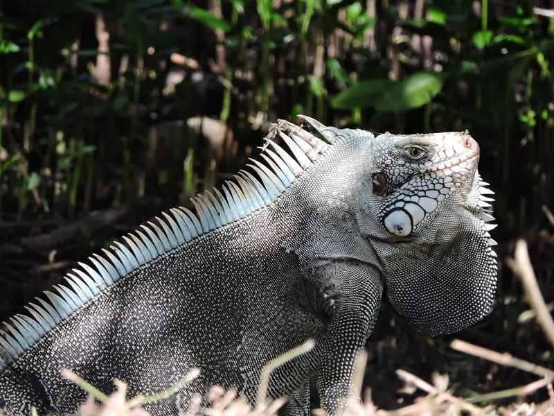
Vive nas árvores da margem e adora tomar sol nos galhos. É herbívora: come folhas, flores e frutos.
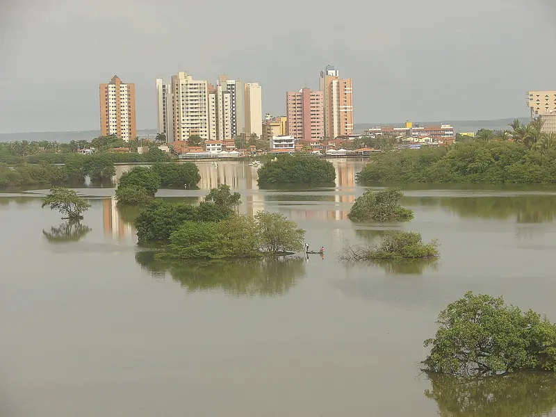
Mangue-branco e siriba (mangue-preto) formam ilhas no meio da água. Também aparecem palmeiras de babaçu.
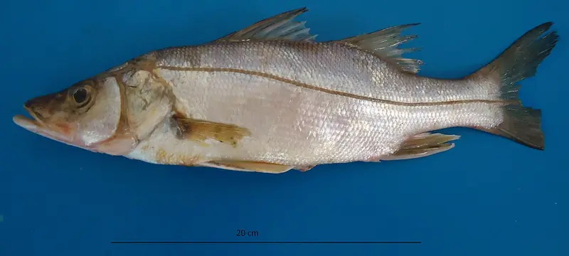
Cerca de 40 espécies já registradas, como camurim (na foto), curimã, urubarana, xaréu, pampo e camurupim.
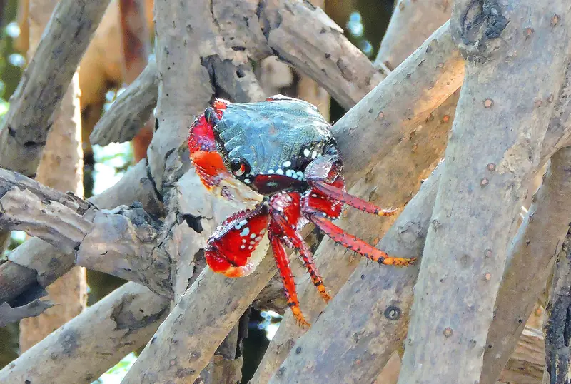
O aratu sobe nas árvores do mangue. Também vivem ali o siri-azul e o chama-maré, aquele de uma garra gigante. Na foto, um caranguejo no mangue do Bacanga, em São Luís.
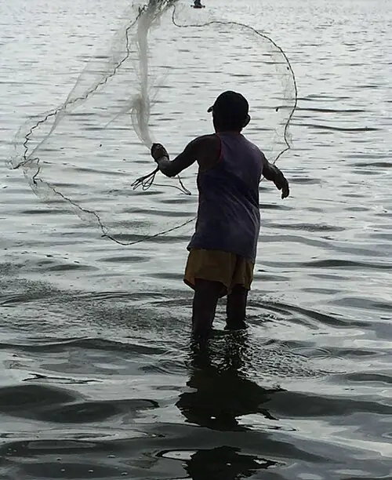
Pescadores de tarrafa e de canoa ainda tiram sustento da lagoa. São parte da história dela.
Passeio
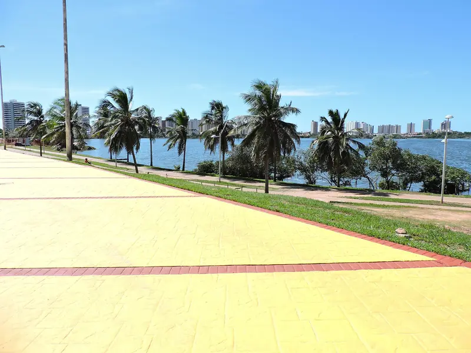
Pistas de cooper e ciclovia contornam a lagoa e lotam no fim da tarde.
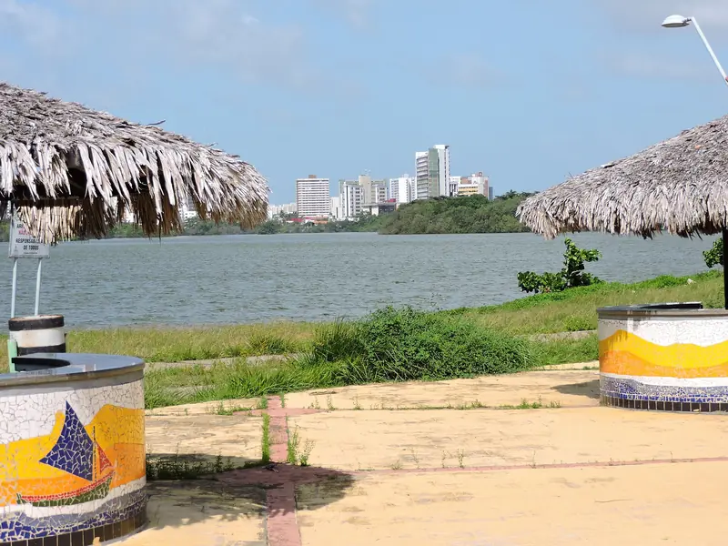
O cantinho mais animado fica do lado de dentro da lagoa, perto da Rua das Samambaias e da Av. Professor Mário Meirelles, onde fica o Big Joe. São mais de uma dúzia de bares e restaurantes colados um no outro, com hambúrguer, petiscos, sushi, comida oriental, tapioca e comida regional. Na Praça da Lagoa ainda há quiosques à beira d’água.
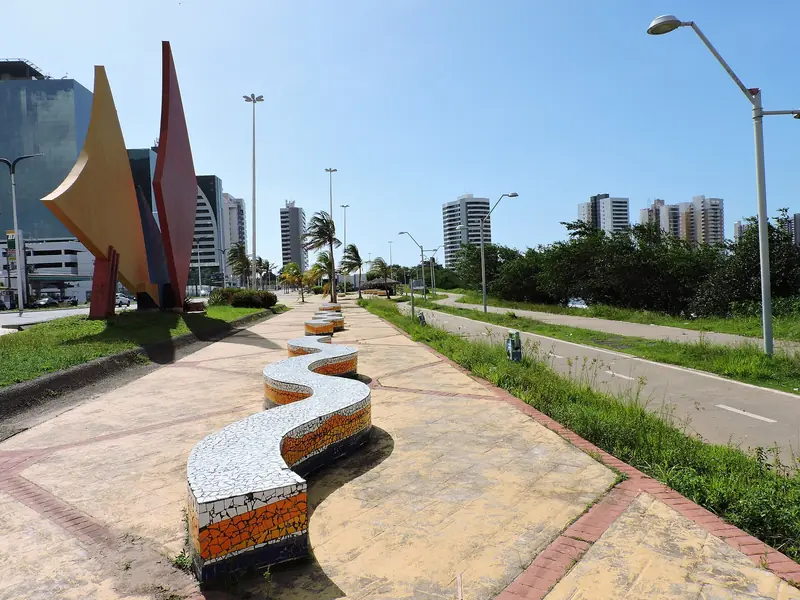
Arena de beach soccer, pista de skate e BMX, quadras de tênis e poliesportivas, além de academias ao ar livre.
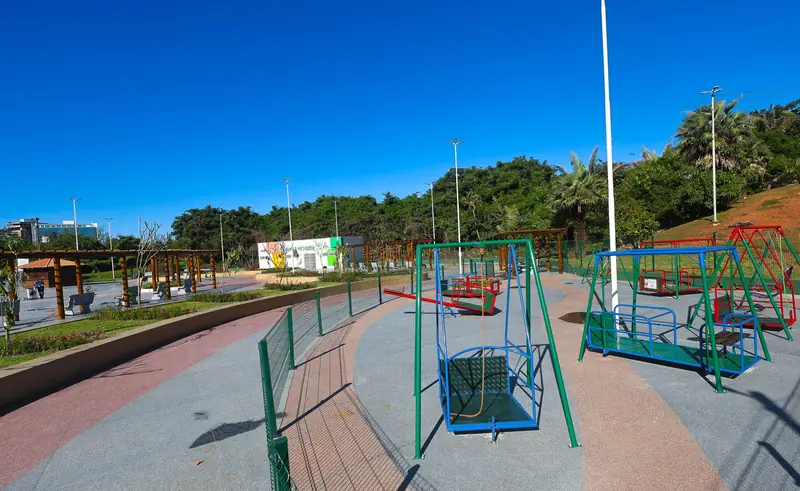
A Praça Aymar Mesquita, inaugurada em junho de 2026, tem quase 3 mil m² com brinquedos adaptados, mapa tátil e design universal, pensada para crianças com deficiência e neurodivergentes. E para todas as outras também.
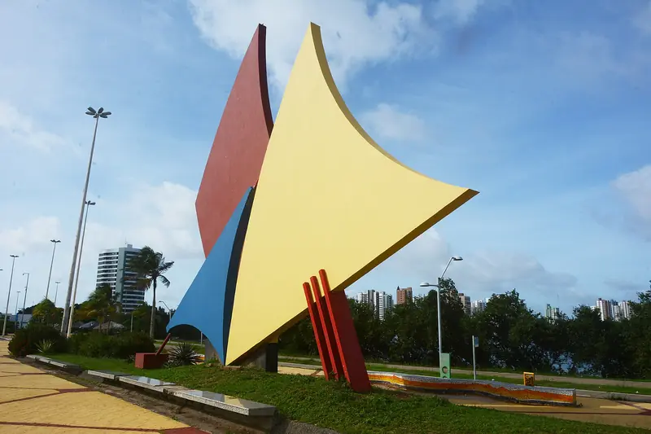
As velas gigantes do Calçadão das Velas são um dos símbolos da lagoa. Na Praça Poeta José Chagas há uma estátua do escritor maranhense.
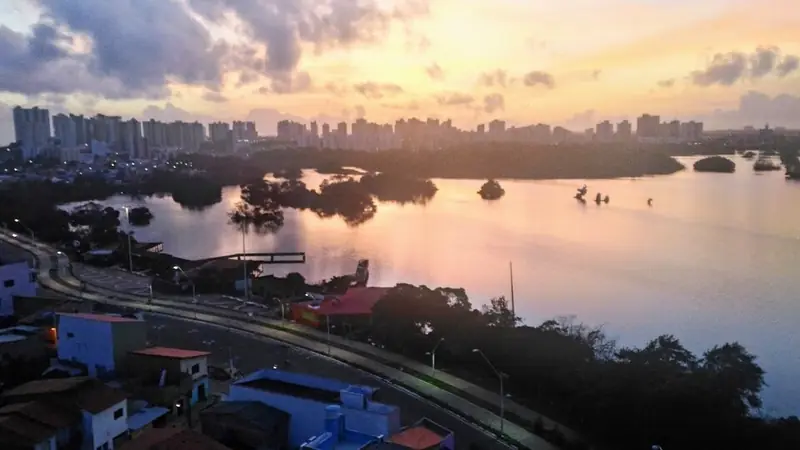
O horário mais bonito e mais movimentado. Chegue lá pelas 17h30 e escolha um lugar na margem.
Toque num horário para ver como a lagoa muda.
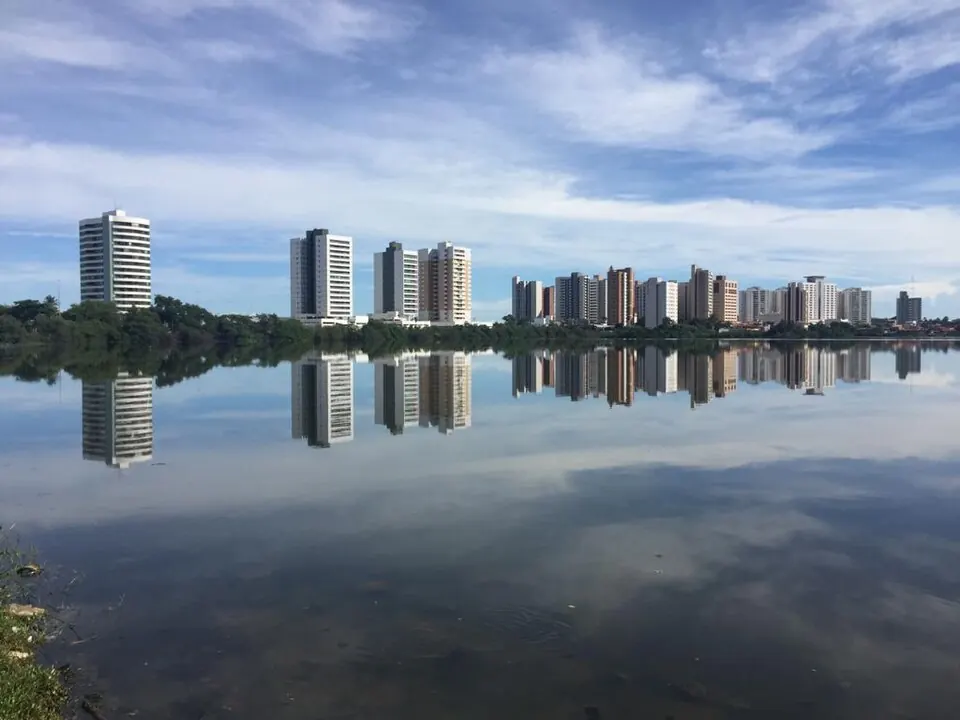
Lenda
Diz a lenda que uma serpente gigante dorme nas galerias subterrâneas de São Luís e não para de crescer. Numa das versões, a cabeça está na Fonte do Ribeirão, a barriga sob a Igreja do Carmo e a cauda na Igreja de São Pantaleão. No dia em que a cabeça alcançar o rabo, a ilha afunda no mar.
Professores e ecologistas usam a lenda como metáfora da fragilidade da ilha. Faz sentido: São Luís depende do equilíbrio entre mar, mangue e cidade.
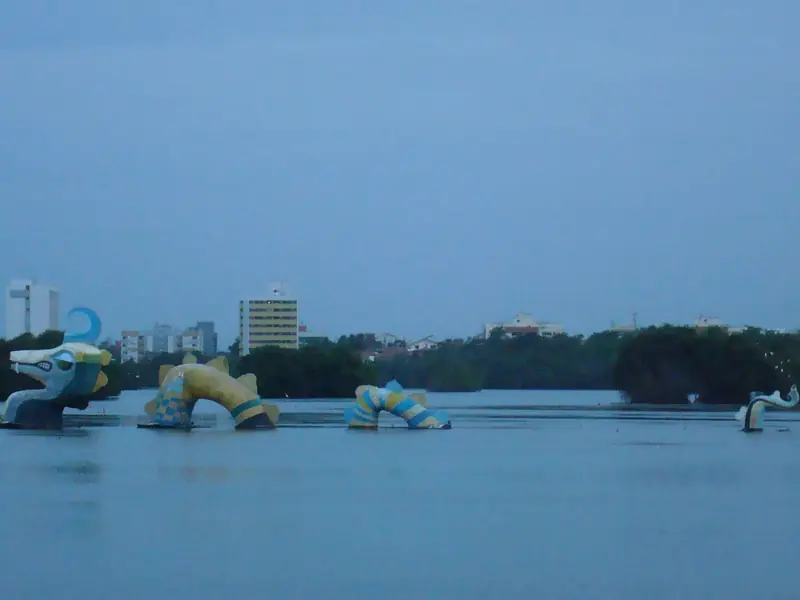
Em dezembro de 2001, o artista maranhense Jesus Santos (1950–2024) colocou na lagoa uma serpente de 74 metros. Com o tempo ela se desmanchou e, em 2019, estava quase toda submersa.
Restaurada pelo Governo do Maranhão, com as cores recuperadas, ela voltou à água em abril de 2026. O projeto prevê iluminação noturna, fogo pela boca e jatos d’água sincronizados com música. Alguns já a chamam de Lulu.
Galeria
Toque numa foto para ampliar. Todas têm licença livre, e os autores estão em “Fontes e créditos”, no fim da página. Algumas são de lugares vizinhos ou da região de São Luís, e a legenda avisa quando for o caso.
Como chegar
Sem internet: mostrando a foto de satélite salva no site.
A lagoa fica ao lado da Avenida Ana Jansen, entre a Ponta d’Areia e o São Francisco, a cerca de 4 km do Centro Histórico. Dá para ir de carro, de aplicativo ou de bicicleta pela orla.
Dúvidas
Oi! Eu sou o assistente da Lagoa da Jansen. Toque numa pergunta aqui embaixo que eu respondo.
Não. Ela se formou nos anos 1970, quando o aterro da Avenida Ana Jansen bloqueou o Igarapé da Jansen e represou a água onde antes havia manguezal.
Tecnicamente é uma laguna, porque se comunica com o mar por um canal com comporta. O nome “lagoa” ficou pelo costume.
O parque tem cerca de 150 hectares. A água tem profundidade média de 1 metro e chega a 3,5 metros no ponto mais fundo.
Não é recomendado. A lagoa ainda recebe esgoto de ligações irregulares, e não encontramos nenhum laudo oficial dizendo que a água é própria para banho.
Uma pesquisa divulgada em 2016 encontrou contaminação no pescado da lagoa e não recomendou o consumo. Não encontramos laudo mais recente. Na dúvida, evite.
Por causa da eutrofização: o esgoto traz nutrientes, as algas se multiplicam e morrem, e a decomposição consome o oxigênio da água. Sem oxigênio, surge o gás sulfídrico, com cheiro de ovo podre. Veja a explicação completa na seção Ciência.
Desde 2015, a Caema eliminou mais de 100 pontos de esgoto. O governo opera a comporta para renovar a água, ajusta o canal com o mar e investiu mais de R$ 20 milhões na revitalização do parque. A Sema monitora a qualidade da água.
A gestão ambiental é da Sema (Secretaria de Estado do Meio Ambiente). A Sinfra cuida das comportas e das obras, a Segov coordena a revitalização e a Caema cuida do esgoto.
Sim. A escultura de 74 metros de Jesus Santos foi restaurada e devolvida à lagoa em abril de 2026. Os efeitos de fogo, água e luz ainda estavam sendo instalados.
Tem. A Praça Aymar Mesquita, inaugurada em 7 de junho de 2026, foi pensada para crianças com deficiência e neurodivergentes, com brinquedos adaptados e mapa tátil. Também há parquinho na Praça Bolbi Miranda.
O cantinho mais animado fica do lado de dentro da lagoa, perto da Rua das Samambaias e da Av. Professor Mário Meirelles, onde fica o Big Joe: são mais de uma dúzia de bares e restaurantes, com hambúrguer, petiscos, sushi, comida oriental, tapioca e comida regional. Também há quiosques na Praça da Lagoa. Veja no mapa, em Como chegar.
O fim da tarde, por causa do pôr do sol. De manhã cedo é ótimo para caminhar. À noite, os bares e restaurantes ficam abertos.
Sobre o projeto
Este site foi feito por estudantes para mostrar a Lagoa da Jansen como ela é: bonita, cheia de história e de vida, e ainda em recuperação. Todas as informações vêm de pesquisas, leis e reportagens, listadas abaixo.
Aponte a câmera do celular para abrir este site.
Fotos do Wikimedia Commons e do Flickr, redimensionadas para a web. As fotos CC BY-SA continuam sob a mesma licença. As fotos com licença NC (não comercial) e a foto de divulgação da Praça Aymar Mesquita são usadas porque este é um projeto escolar, sem fins lucrativos.